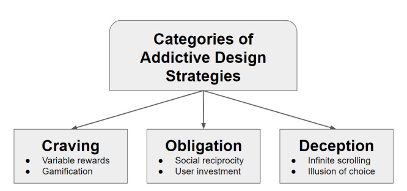

Different from dark patterns, addictive design elements are used to increase user engagement by taking advantage of user psychology and behavior. There are three main categories of addictive design strategies: craving, obligation, and deception
 Gamification applies game design elements and principles in non-game contexts to motivate
and engage the user(Cloke, 2024). Because gamification centers on rewards, leaderboards,
challenges, and points, it becomes easier for the users of these applications to become fixated on
these gamified aspects.
Gamification has found its place not only in the educational setting, but in applications like Uber,
LinkedIn, and more.
This addictive strategy focuses on the ways humans respond positively to rewards. Variable rewards are
given randomly and unpredictably, which produces a stronger dopamine response (Neyman, 2017).
In the context of software design, variable rewards are seen commonly in the form of notifications (think of the ways in
which users react to liked posts). Receiving notifications regarding liked posts, retweets, or message notifications elicit
a dopamine response from the user, which is a contributing factor to social media addiction.
Reciprocity refers to "exchange between two or more actors, generally (though not always) for mutual benefit"(Lewis, 2015).
In social media contexts, reciprocity is seen through following, friending, and instant messaging.
There is another chemical interaction at play here, similar to variable rewards, whereas users often seek gratification
through social interaction, or stay engaged out of a sense of obligation. This can manifest in many ways,
but the easiest examples to point to would be Instagram's "follow back" feature, or read receipts.
This strategy involves the amount of value that individuals place on their social media platforms. According to Neyman(2017), people project more value on applications they are involved in building or creating, such as social media profiles. For this reason, users are less likely to leave platforms they are already invested in such as Facebook or Twitter, or return to mobile games in which they have made significant progress.
Infinite scroll is a design feature that is implemented on nearly all social media applications today.
This design strategy allows applications to "load content as the user scrolls down, allowing the user to explore
a large amount of content with no distinct end"(Interaction Design Foundation, n.d.). This concept has replaced design features
like pagination, which only displays information a single page at a time (think Google).
With a design feature such as infinite scrolling, especially when combined with bite-sized chunks of information,
users are more likely to spend more time engaging and interacting with an app, as there is nothing prompting
them to stop or pause. Additional features such as "pull to refresh" can mimic the effects of gambling in hopes of
receiving more content.
The illusion of choice presents users with a limited set of options. At a glance, this may seem counterintuitive to keeping users
engaged with an application. However, when options are curated in such a way that they are unsatisfactory to the user, they actually
spend more time engaging with the application in hopes to find more suitable content or choices.
The illusion of choice can present itself in many ways, but two common ones are through social media applications and applications such as
Yelp, where users are in search of a specific product, place, or service. Social media algorithms are deliberately crafted to choose what content
makes it to the top of the page. When users are not interested or engaged with the content, they can then use features like infinite scroll and pull to
refresh to (hopefully) find more engaging and relevant content. Additionally, applications such as Yelp may present a limited number of options to its users.
When an individual is dissatisfied with their original options, they try another search and spend more time engaging with the application.